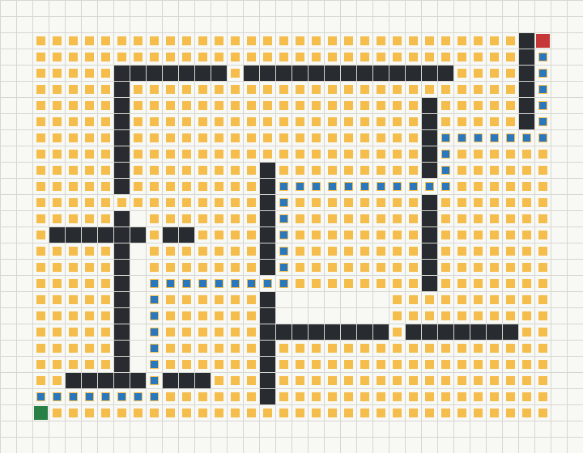
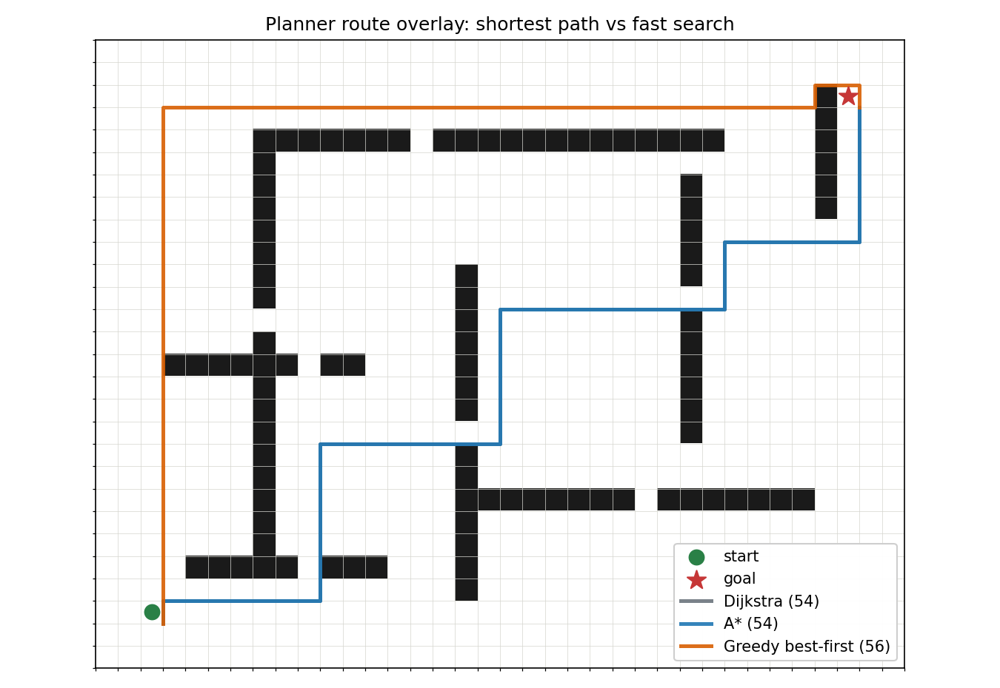
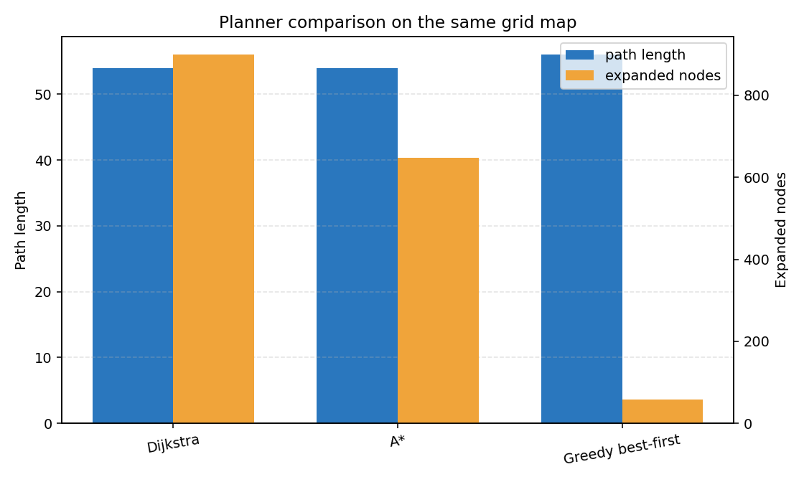
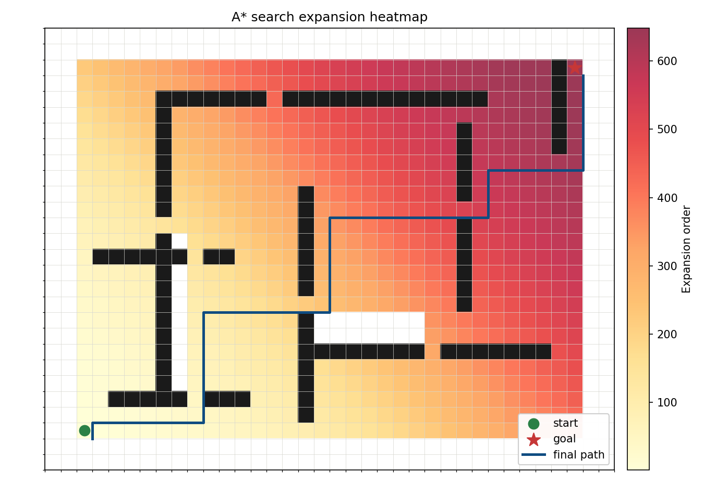
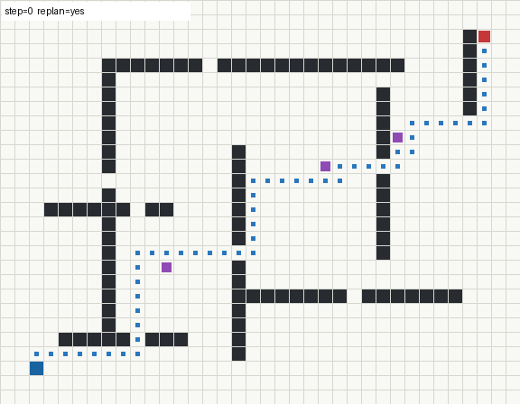
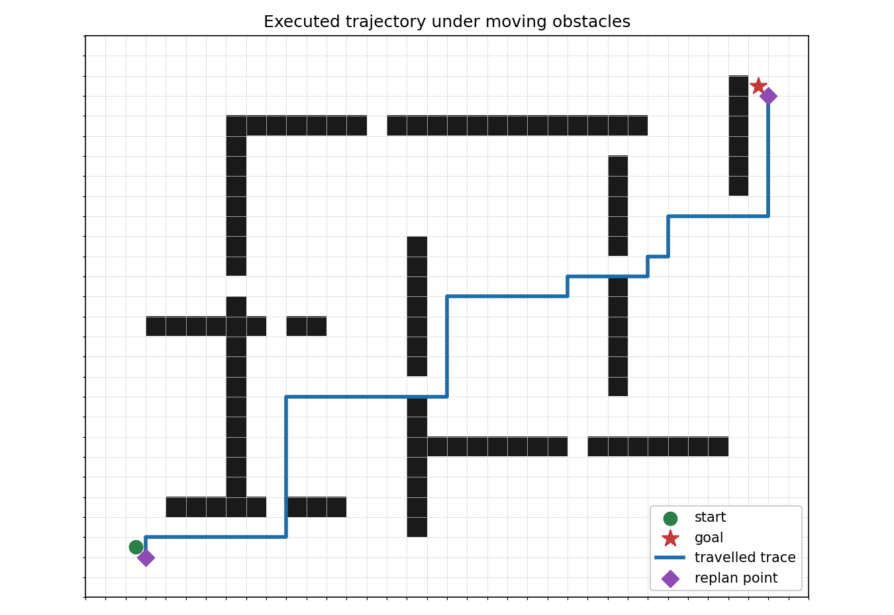
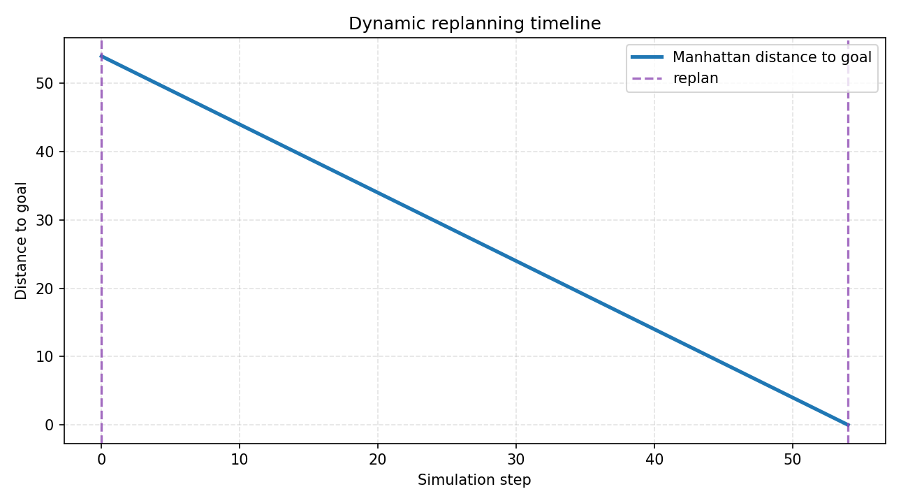

自适应栅格导航与动态重规划汇报
1. 项目背景
nn 项目中包含大量无人车、无人机和机器人导航相关模块。为了让本次改进更接近真实工程项目，我新增了 adaptive_grid_navigation 模块，用二维栅格地图模拟移动机器人导航任务。
该模块不依赖 Carla、AirSim、Mujoco 等大型仿真平台，可以直接在普通 Python 环境中运行，适合课堂展示、算法对比和后续迁移到机器人仿真平台。
2. 项目目标
本项目的目标是制作一个完整的路径规划演示工程，而不是只写一个单独函数。它包括：
- 栅格地图建模。
- 多种路径规划算法实现。
- 动态障碍物模拟。
- 在线重规划机制。
- 图片、图表和 GIF 动图输出。
- 指标文件和测试文件。
- README 与 MkDocs 汇报文档。
3. 新增模块位置
src/adaptive_grid_navigation/
模块结构如下：
src/adaptive_grid_navigation/
├── main.py # 命令行入口
├── grid_map.py # 栅格地图与地图生成
├── planners.py # Dijkstra、A*、贪心搜索规划器
├── simulator.py # 动态障碍物和在线重规划仿真
├── visualization.py # 图片、图表和 GIF 输出
├── requirements.txt # 模块依赖
├── README.md # 模块说明
├── assets/ # 运行结果图片、动图和指标
└── tests/test_navigation.py # 基础测试
4. 核心功能
4.1 栅格地图建模
模块使用二维数组表示地图：
0表示可通行区域。1表示障碍物。- 使用
(row, col)表示机器人位置。 - 地图包含起点
start和终点goal。
grid_map.py 中封装了 GridMap 类，提供边界检查、障碍物检查、邻居节点搜索和演示地图生成。
4.2 多算法路径规划
planners.py 中实现了三种规划器：
DijkstraPlanner：保证最短路径，但搜索节点较多。AStarPlanner：加入启发式函数，通常比 Dijkstra 更高效。GreedyBestFirstPlanner：搜索速度快，但路径不一定最短。
三种算法使用同一张地图进行比较，便于观察路径长度和扩展节点数量差异。
4.3 动态障碍物与在线重规划
simulator.py 中实现了动态障碍物。障碍物会沿预设轨迹移动，当障碍物挡住机器人下一步路径时，机器人会从当前位置重新调用 A* 规划路径。
这个机制模拟了真实导航任务中常见的问题：环境不是完全静态的，机器人需要根据障碍物变化调整路径。
5. 运行方法
进入模块目录：
cd src/adaptive_grid_navigation
python main.py
运行后会在 assets/ 目录生成：
astar_route.png
planner_comparison.png
planner_route_overlay.png
astar_expansion_heatmap.png
robot_trace.png
replanning_timeline.png
dynamic_replanning.gif
metrics.json
planner_metrics.csv
6. 静态路径规划结果
6.1 A* 路径规划结果
下图展示了 A* 在二维栅格地图中的规划路径。深色区域为障碍物，蓝色路径为规划结果，绿色为起点，红色为终点。

这张图可以说明：A* 不是简单直线前进，而是根据障碍物分布选择可通行通道，并最终到达目标点。
6.2 三种算法路径叠加图
下图把 Dijkstra、A* 和 Greedy best-first search 的路径画在同一张地图上。

这张图适合汇报时重点讲：
- Dijkstra 与 A* 都找到长度为 54 的最短路径。
- A* 使用启发式函数减少搜索量，但仍保持最短路径。
- Greedy best-first search 更激进，路径长度变为 56，说明它更快但不一定最优。
6.3 不同算法指标对比
下图比较了 Dijkstra、A* 和 Greedy best-first search 的路径长度和扩展节点数量。

本次运行结果如下：
Dijkstra: path_length=54, expanded_nodes=899
A*: path_length=54, expanded_nodes=648
Greedy best-first: path_length=56, expanded_nodes=58
可以看到：
- Dijkstra 与 A* 都找到了长度为 54 的路径。
- A* 在保持最短路径的同时，扩展节点数量比 Dijkstra 少 251 个。
- 贪心搜索扩展节点最少，但路径长度变为 56，不是最优路径。
7. 搜索过程可视化
7.1 A* 搜索扩展热力图
下图展示 A* 在搜索过程中扩展节点的顺序。颜色越深，表示越晚被扩展；浅色区域表示较早被搜索到。

这张图可以说明 A* 的搜索不是盲目铺满全图，而是受到目标方向启发，会优先向更可能到达终点的区域扩展。
从汇报角度看，这张图可以讲清楚“为什么 A* 比 Dijkstra 更高效”：它仍然保证最短路径，但搜索范围更集中。
8. 动态重规划结果
8.1 动态重规划 GIF
下图展示了机器人在动态障碍物环境中的在线重规划过程。紫色块表示动态障碍物，蓝色块表示机器人当前位置，蓝色路径会随着重规划更新。

本次动态仿真结果：
reached_goal=True
replans=2
travelled=54
frames=55
说明机器人成功到达目标点，并在途中进行了 2 次重规划。
8.2 实际执行轨迹图
下图展示机器人最终实际走过的轨迹。菱形标记表示发生重规划的位置。

这张图可以补充说明：规划路径和实际执行路径不是完全一样的。由于动态障碍物在移动，机器人需要在执行过程中根据环境变化重新规划。
8.3 重规划时间线
下图展示仿真过程中机器人到目标点的曼哈顿距离变化，以及触发重规划的时刻。

这张图适合用来讲“动态规划过程是否稳定”：整体趋势是距离目标越来越近，中间出现重规划时，机器人没有陷入死路，而是继续向目标前进。
9. 工程量说明
本模块不是单个脚本，而是一个完整的小型工程，包含：
- 5 个 Python 源码文件。
- 1 个 README 文档。
- 1 个 requirements 依赖文件。
- 1 个测试文件。
- 7 个可视化成果文件，包括 6 张 PNG 和 1 个 GIF。
- 2 个指标输出文件。
- 2 个 MkDocs 页面，包括项目汇报和演讲提纲。
相比只改一两行代码，这个模块更接近 src 中其他同学提交的独立项目形式。
10. 测试验证
已完成 Python 语法检查：
python -m py_compile main.py grid_map.py planners.py simulator.py visualization.py tests/test_navigation.py
模块运行命令：
python main.py --output assets --max-steps 120
运行结果：
Adaptive grid navigation demo finished
Map: demo Start: (25, 2) Goal: (2, 33)
Dijkstra: success=True path_length=54 expanded_nodes=899
A*: success=True path_length=54 expanded_nodes=648
Greedy best-first: success=True path_length=56 expanded_nodes=58
Dynamic replanning: reached_goal=True replans=2 travelled=54 frames=55
同时运行了模块测试，测试内容包括：
- 演示地图合法性。
- A* 是否能找到路径。
- A* 与 Dijkstra 的路径长度是否一致。
- A* 的扩展节点数是否少于 Dijkstra。
- 贪心搜索是否能返回有效路径。
- 动态重规划是否能生成仿真帧。
- 起点落在障碍物上时是否会被拒绝。
11. 汇报时可以重点讲的内容
上台时可以按下面顺序讲：
- 先说明这是一个完整的
src/adaptive_grid_navigation工程模块。 - 展示 A* 路径图，说明基本路径规划成功。
- 展示三算法路径叠加图，说明算法差异。
- 展示指标对比图，说明 A* 的效率提升。
- 展示搜索热力图，说明 A* 为什么搜索更集中。
- 展示 GIF，说明动态障碍物下可以在线重规划。
- 展示轨迹图和时间线图，说明机器人最终稳定到达目标。
这样汇报时就不只是“我写了代码”，而是可以围绕算法、工程结构、可视化结果和测试验证完整展开。
12. 项目意义
该模块可以作为后续机器人导航项目的基础：
- 可以把栅格地图替换成真实仿真地图。
- 可以把 A* 规划结果发送给 ROS、Gazebo 或 Webots 机器人。
- 可以继续加入路径平滑、速度规划和动态窗口法。
- 可以把动态障碍物替换成仿真环境中的行人或车辆。
13. 小结
本次新增的 adaptive_grid_navigation 模块完成了从地图建模、路径规划、动态避障、重规划、结果可视化到测试验证的完整流程。
它既有算法实现，也有工程组织和可视化成果，适合作为课程汇报项目展示。